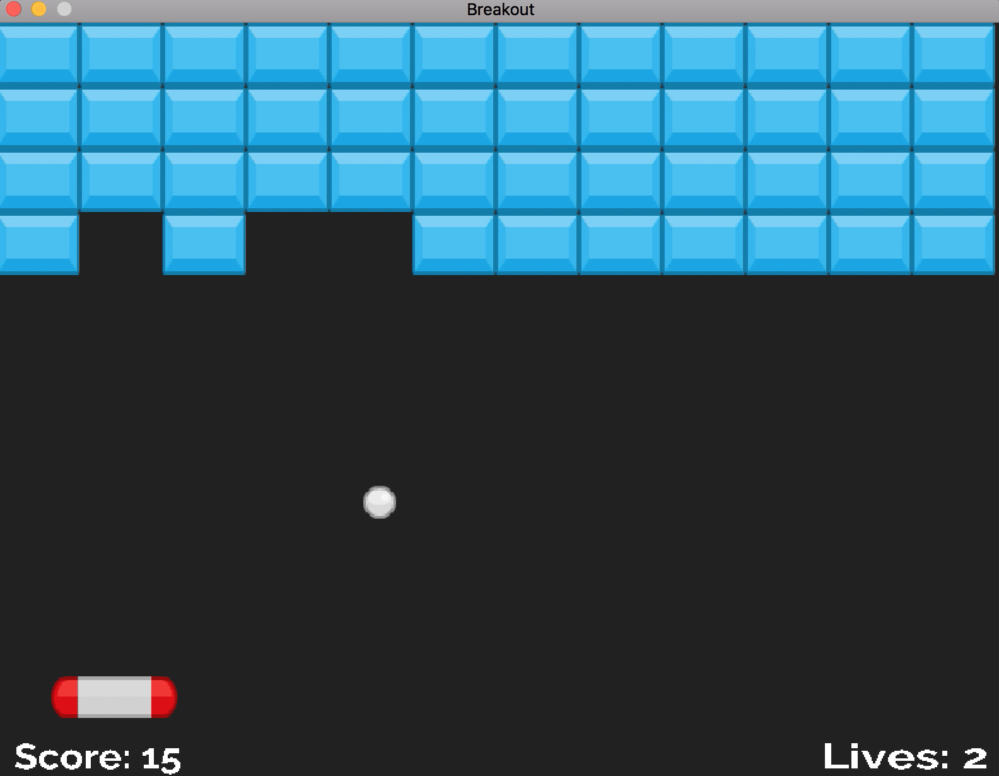
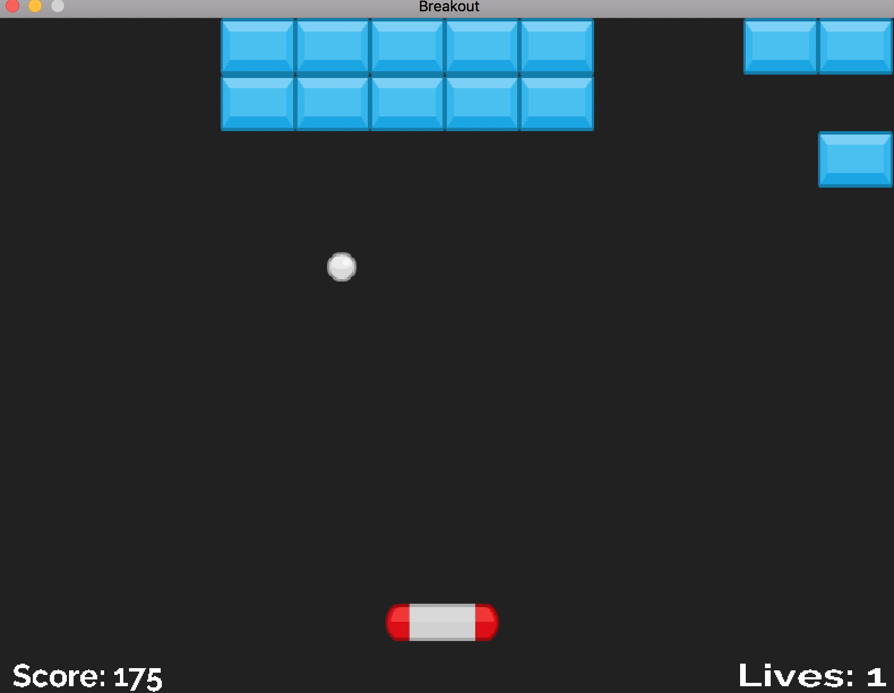
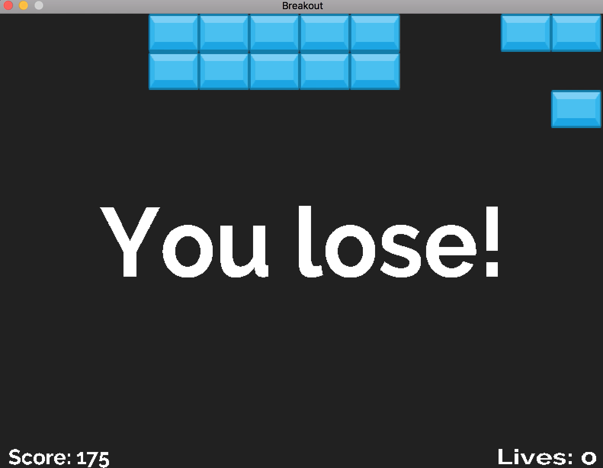
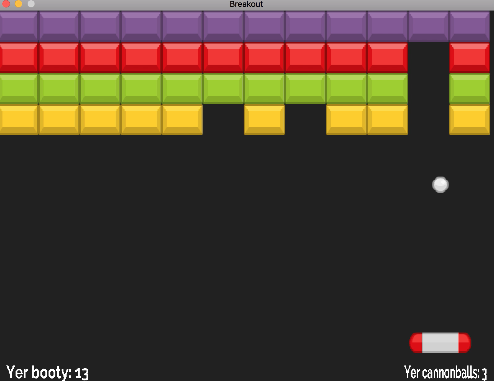
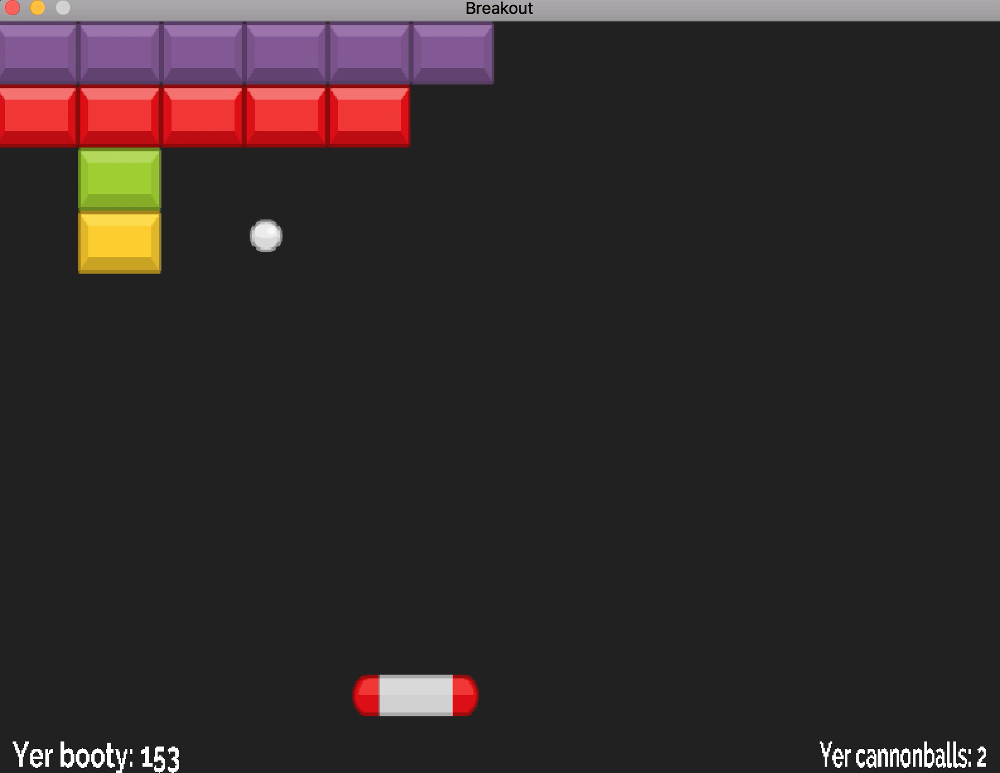
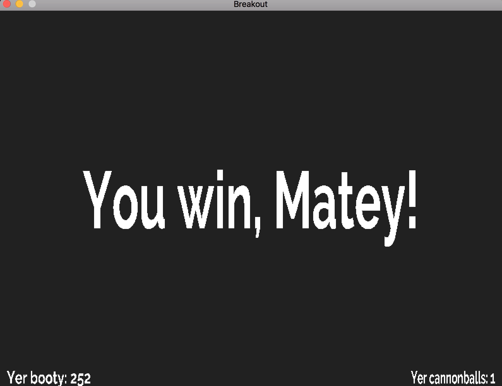

|
Breakout
Breakout
|
     
To play Breakout, simply launch the executable for your platform.
Executables for Windows, Mac, and Linux are provided in the Game directory, or you can compile the game yourself (see below). The game should be run from within the Breakout directory.
If you want to compile the game from source yourself, compiling Breakout should be super simple! The appropriate SDL2 libraries are already included in the "ThirdParty" folder for you, and the Makefile accounts for cross platform compilation. Compiling Breakout should be as simple as entering the shell of your choice, navigating to the Breakout root directory, and running the command 'make'. This should compile a Breakout executable into the temp directory for you.
Strings are loaded from configuration files located in Assets/2DBreakout_Locales/. The language that is loaded into the game on launch is the one specified in the file Config/lang.txt. For example, if the contents of default.txt are en then the english language file en.txt will be loaded.
These language files list keys and values for the various strings in the game, separated by a : (no spaces). Everything following the : will appear in the game, including spaces and other :s. The following keys must have provided translations in every language file:
winlosescorelives The default language for the game is english, and a pirate language file is provided as an alternative and as an example.Levels are loaded from configuration files located in Assets/2DBreakout_Levels/. Each level file lists the width and height of the level in blocks (separated by a space), followed by the actual bricks of the level (one row per line). Bricks are represented by the following one character codes:
y - yellow - 1 pointg - green - 3 pointsb - blue - 5 pointsr - red - 7 pointsw - white - 9 pointsp - purple - 10 pointsConfig/levels.txt.The main goal we had in mind when we designed our classes was to keep everything as seperated as possible. If one object had two roles (or more), then we abstracted out the different parts into separate classes. Our architecture, while designed primarily for this single game, was influenced heavily by the idea of later reusing the core parts. Thus, we were also heavily inspired by the general purpose design of Unity, especially its system of GameObjects and Components. While we didn't implement a full component structure of our own due to the simple nature of breakout, our overall design led us to use many of the same practices that we would have in Unity such as the concept of managers. However, while we were conscious of seperating the behavior of the game and the behavior of the engine (i.e. pulling out the breakout specific parts of our GameManager into a BreakoutManager), we never really got around to drawing a hard line between them. This led to one of our biggest debates:
Once upon our time, the GameManager kept track of a list of all the GameObject in the game, so that we could easily update and render each one every frame. Along came the BreakoutManager, who wanted to keep track of the player and the ball and all of the bricks separately so that it could compute gamestate information, like whether the player had beaten the level. So as each level was created, the GameObjects were manually added to both places. This was a red flag to some, who wanted the BreakoutManager to be the sole arbitor of the Breakout-related GameObjects (including their construction, which otherwise has the very poor home of the ConfigParser). Others were adamant that the GameManager should know about eveything, and, while perhaps a bit ugly, adding GameObjects to two places was a small price to pay to maintain the core design of our classes. Both arguments had their merits, but eventually The Great Refactor was permitted to occur, leaving the GameManager only a single lonely BreakoutManager to manage. Unfortuantely, this broke the code for ball collisions, as it was dependant on the list of GameObjects in the GameManager, so the collision code in the ball crept into the BreakoutManager in the form of some callbacks. In the end, we were left with a still ugly solution that no one was happy with.
In the end, there was a much better solution, but it was too late to implement it by the time we found it. We should have added a line to the GameObject constructor that registered every GameObject with the GameManager so that 1) the BreakoutManager didn't have to be bothered to update and render all of its GameObjects, and 2) the GameManager would have a definative list of all the GameObjects that exist. In the end, we went through all this trouble just to end up with a worse design because we didn't put our engine code and Breakout code in different folders and didn't see how our two engine pieces could work together through our focus on separating everything.
Sound and Persistent GameObjects: Very late in development we realized we had a bug where loading a new level would create a second copy of the background music. The biggest factor that led to this bug was the absence of persistent GameObjects, similar to Unity's "Don't Destroy on Load" option. If we had had the time to create this feature, our music instantiation could have lived in our BreakoutManager where it really belongs, instead of in the GameManager where it does not belong, but works correctly.
Collision: For Breakout, the only this that really needs to worry about collision is the ball, so our collision logic originally lived in the ball class. However, it would make more sense to have collision as a potential feature of ANY GameObject, especially because it would save programmers from needing to reimplement collision logic in any GameObject subclass that needed it. Additionally, this very same collision logic was the biggest reason why The Great Refactor ultimately failed.
1.8.14